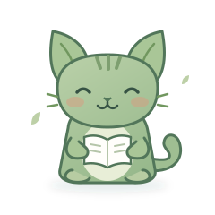

从短词开始
先用两个字或两位数字热身，稳定记住后再增加长度。
LESS RUSH. MORE FOCUS.
给注意力一点空间。在看见、记住与理解之间，找到你的阅读节奏。
内容会短暂出现，然后消失。
试着记住整体，再输入你看到的内容。
先用两个字或两位数字热身，稳定记住后再增加长度。
试着记住词义或数字结构，而不是逐个默念。
转到故事滚读，用复述检查自己是否真正读懂。
A LITTLE STORY, A LITTLE FOCUS.
发生了什么？为什么发生？最后有什么变化？
MAKE IT YOURS
上传 UTF-8 TXT（每行一个词或短语）或 JSON。词语会自动按长度归入四个阶级，英文短语请保留空格。
JSON 格式：[{"text":"缓存","type":"zh","category":"computer"}]。难度按长度自动判断；相同词语自动去重。
数据只保存在当前浏览器，不会上传服务器。词库与文章由本机玩家共享，成绩、积分和宠物各自独立。换设备前导出备份，可在左侧导入恢复；同 ID 玩家保留当前档案，不重复增加积分。
A LITTLE PRACTICE, A LITTLE GROWTH.
认真练习，收集积分。领养一只小伙伴，一起慢慢长大。

YOUR NEXT LITTLE FRIEND
完成训练赚积分，80 分就能领养第一只叶叶猫。
ADOPT A COMPANION
仅比较这个浏览器中的玩家档案，按累计得分排序。它是练习记录，不是在线竞技排名。
速度不额外加分，先准确、再提速。升级前的旧记录仍保留，不补发积分。切换档案不会结算未完成的练习。